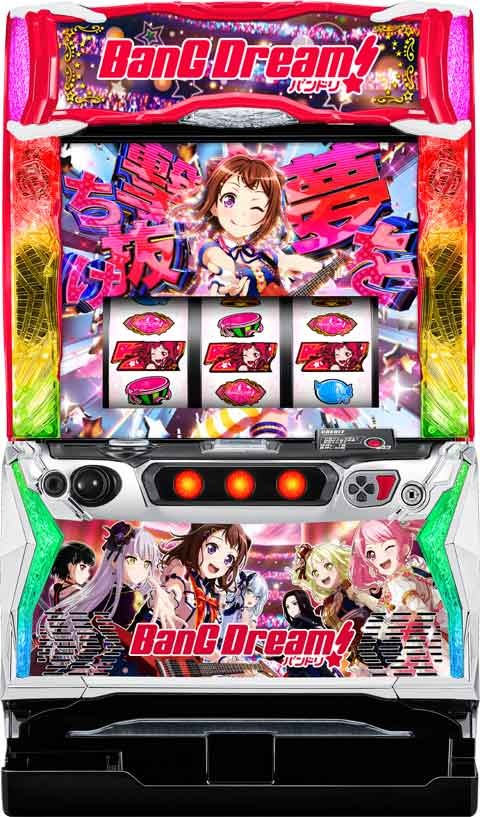
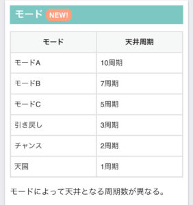
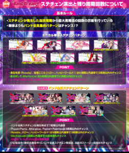
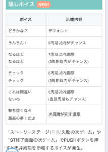
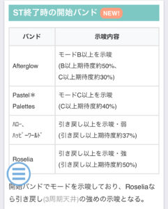

Lバンドリ

【天井情報】
最大10周期 AT当選
1周期の平均は62G+前兆
設定変更時 最大7周期
ST駆け抜け後 最大5周期
大ガルバチャレンジ失敗後 1周期
【リセット判別】
オリンピアなのでガックン判別不可
【有利区間について】
有利区間完走時は上位STから始まる？
狙い目
【リセット狙い】
3周期0pt
2周期150pt
【AT間(周期)天井狙い】
※1周期到達は前兆込みで100Gくらいが平均？
駆け抜け以外後
7周期0pt
6周期150pt
駆け抜け後
4周期0pt
3周期150pt
【ディスク狙い】
ディスクが赤、黒、紫なら当該周期消化まで。
【実ゲーム天井狙い】
実ゲーム900Gハマり後は当該周期で当選？
700G以上ハマっていれば当選まで打てそう。
【pt(スター数)狙い】
周期到達時の期待度30%弱(平均の期待度の可能性あり)
1.3.5.7周期 200ptから
その他 240ptから
【大ガルバチャレンジ失敗後狙い】
失敗後は1周期で当選
最後のメモリが-60から-70枚以下だと失敗後の可能性あり？
履歴から予測は難しいのとそもそもディスクの色が変化してる可能性がありそう。
バンドリ
【ST単発4連続後狙い】
赤7直撃からクライマックスライブで駆け抜けすると見た目上駆け抜けでもスルー回数はリセットされる様です。
履歴上駆け抜けが続いていても獲得枚数150枚以上がある場合はダメな時があるのでご注意ください。
慎重に行く場合は100枚以上履歴無しの台が良いかも。
110枚以内はライブジャック多め。
120枚以上はクライマックスライブ多めな傾向。
駆け抜け以外でもライブジャックしか当選してない場合は連続駆け抜け回数にカウント出来そう？クライマックスライブに当選してない事が重要？
単発4連続後 ST当選まで
単発3連続後
積極派 2周期または1周期100pt
慎重派 3周期または2周期100pt
【有利区間切れ狙い】
上位ST後 1周期は強そうでしたが狙えない雰囲気です。
やめ時
駆け抜け4連続となった場合は当選まで。
大ガルバチャンス失敗後は1周期当選なので1周期消化。
ディスクの色
赤、紫、黒の場合はその周期を消化。
ST終了時の開始のバンド
Roseliaは3周期まで？
→3周期抜け複数回目撃。単体では狙えなそう。
ストーリーステージ失敗の次ゲームやST終了画面の次ゲームで隠しボイスを確認
・これは間違いないね
・撃ち抜くなら…
の場合は示唆に合わせて当選まで。
その他
モード

ステチェン示唆

隠しボイス示唆

ST終了時の開始バンド

参考元
基本情報
- メーカー: オリンピアエステート
- 機械割: 97.6% 〜 112.5%
- 導入開始日: 2024年11月05日（火）
- ゲーム性概要: 通常時は成立役に応じてスターポイントを貯めていき、250スターになると1周期に到達して前兆へ移行。最終的に演出をクリアすればボーナスとなり、ボーナス後は必ずSTへ突入する。 ST「ガールズバンドパーティ！」は20G or 無限継続で、ボーナス当選で再セット。ボーナスは「クライマックスライブ！」と「ライブジャック」のいずれかで枚数を決定しボーナス中は枚数上乗せや次回無限ST移行を抽選する。 特定の条件を満たすと、上位ST突入をかけた「大ガールズバンドパーティ！チャレンジ」へ突入。成功期待度は約50%で、上位ST中は当選したボーナスがすべて「クライマックスライブ！」になる。


打ち方
打ち方・小役
打ち方（小役狙い）
［最初に狙う絵柄］

左リール枠上から上段付近にBARを目押し。
［スイカ停止時は中リールを目押し］

［レア役の停止例］

※強チャンス目は中リールにスイカを狙うのが条件（スイカの取りこぼしは含まない）
変則押しはNG

ナビ非発生時は左1stでの消化を推奨だ。
解析情報通常時
小役関連
小役確率
| 役 | 確率 |
|---|---|
| リプレイ | 1/7.3 |
| 押し順ベル | 1/1.5 |
| 共通ベル | 1/28.1 |
| 弱チェリー | 1/256.0 |
| スイカ | 1/256.0 |
| 弱チャンス目 | 1/66.6 |
| 強チェリー | 1/799.2 |
| 強チャンス目 | 1/799.2 |
状態ごとのバンドリンク役確率
| 状態 | 確率 |
|---|---|
| 通常時 | 1/18.8 |
| スターブースト中 | 1/8.6 |
| ST中 | 1/11.2 |
| クライマックスライブ！の 枚数決定ゾーン中 | 1/17.0 |
| クライマックスライブ！の ボーナスパート中 | 1/36.4 |
| 大ガルパチャレンジ中 | 1/8.6 |
リールロック

発生した時点で夢撃ち成功以上濃厚となる。
リールロック段階ごとの特徴
| リールロック | 示唆 |
|---|---|
| 1段階 | ディスクの色昇格（夢撃ち停止） |
| 2段階 | ボーナス直撃 |
| 3段階（赤7揃い） | クライマックスライブ！直撃 |
| 3段階（赤7ハズレ） | ロングフリーズ |
リールロック確率
| リールロック | 確率 |
|---|---|
| 1段階 | 1/762.8 |
| 2段階 | 1/3137.4 |
| 3段階（赤7揃い） | 1/16250.8 |
| 3段階（赤7ハズレ） | 1/65470.1 |
スターブースト当選率
| 役 | 通常 | 高確 | 超高確 |
|---|---|---|---|
| バンドリンク役 | ー | ー | 3.1% |
| 弱チャンス目 | 1.6% | 12.5% | 100% |
| スイカ・弱チェリー | 25.0% | 50.0% | 100% |
| 強レア役 | 75.0% | 100% | 100% |
内部状態関連
内部状態移行率
通常・高確・超高確の3種類があり、レア役成立時のスターブースト当選率が変化。レア役で昇格を、ハズレで転落を抽選する。
［通常中］内部状態移行率
| 役 | 通常 | 高確 | 超高確 |
|---|---|---|---|
| その他 | 100% | ー | ー |
| ベル | 100% | ー | ー |
| リプレイ | 100% | ー | ー |
| バンドリンク役 | 87.5% | 12.5% | ー |
| 弱チャンス目 | ー | 87.5% | 12.5% |
| スイカ・弱チェリー | 96.9% | 3.1% | ー |
| 強レア役 | 96.9% | 3.1% | ー |
［高確中］内部状態移行率
| 役 | 通常 | 高確 | 超高確 |
|---|---|---|---|
| その他 | 25.0% | 75.0% | ー |
| ベル | ー | 100% | ー |
| リプレイ | ー | 100% | ー |
| バンドリンク役 | ー | 87.5% | 12.5% |
| 弱チャンス目 | ー | 50.0% | 50.0% |
| スイカ・弱チェリー | ー | 99.6% | 0.4% |
| 強レア役 | ー | 99.6% | 0.4% |
［超高確中］内部状態移行率
| 役 | 通常 | 高確 | 超高確 |
|---|---|---|---|
| その他 | ー | 25.0% | 75.0% |
| ベル | ー | ー | 100% |
| リプレイ | ー | ー | 100% |
| バンドリンク役 | ー | ー | 100% |
| 弱チャンス目 | ー | ー | 100% |
| スイカ・弱チェリー | ー | ー | 100% |
| 強レア役 | ー | ー | 100% |
モード
モードごとの天井周期
| モード | 周期 |
|---|---|
| 通常A | 10周期 |
| 通常B | 7周期 |
| 通常C | 5周期 |
| 引き戻し | 3周期 |
| チャンス | 2周期 |
| 天国 | 1周期 |
特定タイミングでのモード移行
| タイミング | 移行先 |
|---|---|
| 設定変更時 | 通常B以上濃厚 |
| ST駆け抜け時 | 通常C以上濃厚 |
| 大ガールズバンドパーティ！チャレンジ失敗時 | 天国濃厚 |
スターポイント（周期抽選）
周期抽選概要

通常時は毎ゲーム成立役に応じてスターポイントを加算。250pt貯まると1周期でATを抽選する。 スターポイント獲得の特化ゾーン「スターブースト」も存在。
周期抽選 性能
| 項目 | 内容 |
|---|---|
| 1周期までのポイント | 250pt |
| 1周期までの平均ゲーム数 | 62G |
| 周期到達時のAT平均期待度 | 約28% |
| 最大天井 | 10周期 |
［ディスクの色で期待度示唆］

ディスクの色で当該周期の期待度を、バンドの種類で周期天井回数を示唆。出現後はリールの下側に表示されるのでいつでも確認できる。赤や紫ならチャンスだ。
サポートバンド

通常時はサポートバンドを獲得することで様々な恩恵を受けることができる。周期開始時の 27.0% でサポートバンドを獲得。獲得後は250スター到達（周期到達）まで滞在し続ける。
小役別の獲得スターポイント
| 役 | ポイント |
|---|---|
| リプレイ・ベル | 5pt以上 |
| バンドリンク役 | 10pt以上 |
| 弱レア役 | 20pt以上 |
| 強レア役 | 50pt以上 |
※獲得ポイントは5pt、10pt、20pt、30pt、50pt、100pt、250pt
スターブースト
スターブースト概要

スターポイント特化ゾーンで、2種類の告知パターンを任意に選択できる。 消化中は小役を引けばポイントが加算。レア役成立時はポイントに加え、ゲーム数が再セットされる。
スターブースト 性能
| 項目 | 内容 |
|---|---|
| 当選契機 | レア役時の抽選 |
| 移行確率 | 1/166.3 |
| 継続ゲーム数 | 7G＋α（平均21.6G） |
| 平均獲得スターポイント | 約120pt |
| 消化中の抽選 | 小役成立でスターポイント獲得、 レア役時は7Gを再セット |
［先告知タイプ］

ポイントを獲得するごとに告知。
［後告知タイプ］ ポイント獲得時に星アイコンを獲得して、終了時にまとめて告知。

小役別の獲得スターポイント
| 役 | ポイント |
|---|---|
| リプレイ・共通ベル | 10pt以上 |
| バンドリンク役 | 20pt以上 |
| 弱レア役 | 50pt以上 |
| 強レア役 | 100pt以上 |
※獲得ポイントは10pt、20pt、30pt、50pt、100pt、250pt
ストーリーステージ（前兆）
ストーリーステージ概要

導入パート・進行パート・ジャッジパートの3つで構成されたAT前兆。 ストーリーは全5種類で、エフェクトの色や演出パターンで期待度が示唆される。
［ストーリーの種類］

［エフェクトの色］

青＜黄＜緑＜赤＜虹の順で期待度がアップする。
［期待度を示唆する多彩な演出］

［ジャッジパート］

カウントアップ形式の連続演出で成否が告知される。
クライマックスジャッジ中・成功書き換え当選率
| 役 | 当選率 |
|---|---|
| 強レア役 | 100% |
クライマックスジャッジ中の強レア役は書き換え確定。すでに成功の場合はクライマックスライブ！のストック獲得を抽選する。
演出動画
ロングフリーズ
リールロック3段階発生時に、赤7がハズれるとロングフリーズが発生。クライマックスライブを消化後、大ガールズバンドパーティ！（上位AT）へ直行する。
解析情報ボーナス時
初当り時のボーナス
エピローグボーナス概要

初当り時は基本的にエピローグボーナスを経由してSTへ移行。消化中は無限STを抽選する。
エピローグボーナス 性能
| 項目 | 内容 |
|---|---|
| 突入ルート | 初当り時の一部 |
| 継続ゲーム数 | 100枚＋α獲得まで |
| 消化中の抽選 | 無限STを抽選、 ボーナス枚数上乗せ抽選（強レア役は確定） |
| その他 | 終了後はSTへ突入 |
スタービートボーナス概要

初当り時のプレミアムパターン的な存在で、終了後は上位STへ直行する。
スタービートボーナス 性能
| 項目 | 内容 |
|---|---|
| 突入ルート | エピローグボーナス当選時の 約0.2%（1/512） |
| 継続ゲーム数 | 200枚獲得まで |
| 消化中の抽選 | 調査中 |
| その他 | 終了後は上位STへ突入 |
ガールズバンドパーティ！（ST）
ST概要

20GのSTで、消化中はおもにレア役でボーナスを抽選。レア役成立後の夢撃ち演出（擬似遊技）に成功すればボーナスとなる。 ディスクの色で夢撃ち演出の期待度が示唆されていて、夢撃ち演出ごとにディスクとバンドが変化。黒ディスクは成功すれば上位STをかけた「大ガールズバンドパーティ！チャレンジ」をストックする。
ガールズバンドパーティ！（ST）性能
| 項目 | 内容 |
|---|---|
| 突入ルート | エピソードボーナス終了後 |
| 継続ゲーム数 | 20G or 無限 |
| ボーナス期待度（STループ） | 約65% |
| 前兆発展確率 | 1/8.7 |
| 消化中の抽選 | レア役でボーナス抽選 （レア役成立で必ず夢撃ち演出に発展） |
ガールズバンドパーティ！初当り確率
| 設定 | 確率 |
|---|---|
| 2 | 1/328.6 |
| 3 | 1/326.9 |
| 4 | 1/304.4 |
| 5 | 1/291.5 |
| 6 | 1/271.9 |
ディスクの色別・夢撃ち演出成功期待度＆特徴
| ディスク | 期待度＆特徴 |
|---|---|
| 青 | 31.9% |
| 赤 | 78.1% |
| 紫 | 85.2% （当たればクライマックスライブ！） |
| 黒 | 40.3% （成功時は大ガルパチャレンジストック） |
［夢撃ち演出］

青がデフォルト、赤なら大チャンス、虹ならボーナス濃厚だ。
［黒ディスク］

ディスクは通常時と同じくリールの下側に表示。ディスク5枚目以降は黒の出現率がアップする。
［バンドの種類］

バンドによってクライマックスライブ！当選時の初期枚数特化ゾーンの種類が変化する。
［大ガールズバンドパーティ！チャレンジストック］

基本的にボーナス確定後のPUSHボタンでストック獲得を告知。ストックはST終了時に使用される。
ボーナス当選期待度
| 役 | 青ディスク | 赤ディスク |
|---|---|---|
| バンドリンク役 | 22.3% | 70.7% |
| 弱チャンス目 | 25.0% | 75.0% |
| スイカ・弱チェリー | 30.1% | 79.7% |
| 強レア役 | 100% | 100% |
| 役 | 紫ディスク | 黒ディスク |
| バンドリンク役 | 80.5% | 24.2% |
| 弱チャンス目 | 84.0% | 32.4% |
| スイカ・弱チェリー | 88.3% | 41.4% |
| 強レア役 | 100% | 100% |
※前兆中の書き換えを考慮しない期待度
前兆中のレア役は書き換え濃厚。成功確定後はクライマックスライブ！への書き換え抽選がおこなわれる（レア役は書き換え濃厚）。
ST中ボーナス
ライブジャック概要

100枚を獲得してすぐにボーナスパートへ移行する。
ライブジャック性能
| 項目 | 内容 |
|---|---|
| 当選契機 | ST中ボーナス当選時の一部 |
| 上乗せ枚数 | 100枚＋α |
クライマックスライブ！概要

開始時にSTクリア時のバンドに対応した特化ゾーンで、ボーナスの枚数を決定。枚数決定後はボーナスパートへ移行する。 超強力な上乗せ性能を秘めた対バンスペシャルライブへの発展することもある。
クライマックスライブ！性能
| 項目 | 内容 |
|---|---|
| 当選契機 | ST中ボーナス当選時の一部 |
| 上乗せ枚数 | 最低100枚以上 |
| 消化中の抽選 | タイプに応じて差枚数を上乗せ |
| その他 | 終了後はボーナスパートへ |
タイプごとの特徴
| タイプ | 内容 |
|---|---|
| パネルスライド タイプ | ● 保証ゲーム数5G ● 小役入賞で上乗せパネル獲得 ● 保証ゲーム終了後の2択当て失敗で終了 |
| パネル増加 タイプ | ● 保証ゲーム数1G ● 小役入賞で上乗せパネル獲得 ● 保証ゲーム終了後の2択当て失敗またはパネル5枚獲得で終了 |
| パネル昇格 タイプ | ● 保証ゲーム数5G ● 毎ゲーム成立役を参照して必ず上乗せ ● 保証ゲーム終了後の2択当て失敗で終了 |
タイプに対応したバンド
| タイプ | 内容 |
|---|---|
| パネルスライド タイプ | ● Poppin’Party ● Pastel＊Palettes ● Morfonica |
| パネル増加 タイプ | ● Afterglow ● ハロー、ハッピーワールド！ |
| パネル昇格 タイプ | ● Roselia ● RAISE A SUILEN |
［タイプは開始時に表示］

バンドごとにタイプは決まっているが、画面でも表示してくれる。
［パネルスライドタイプ］

［パネル増加タイプ］

［パネル昇格タイプ］

［対バンスペシャルライブ］

クライマックスライブ開始時に発展する可能性がある。
［アンコール］

アンコールが発生するとボーナスパート消化後、再度クライマックスライブ！に突入。対バンだった場合は対バンに再突入するので超激アツだ。
ボーナスパート

初期枚数決定ゾーンで獲得した枚数を消化するゾーン。消化中は無限STや差枚数上乗せが抽選される。
ボーナスパート性能
| 項目 | 内容 |
|---|---|
| 突入契機 | ライブジャックorクライマックスライブ！後 |
| 1Gあたりの純増 | 約4.7枚 |
| 消化中の抽選 | 成立役に応じて無限STや差枚数上乗せを抽選 |

ボーナスの差枚数上乗せも抽選！
ボーナス中の上乗せ枚数
| 役 | 枚数 |
|---|---|
| バンドリンク役 | 抽選で10枚以上 |
| 弱レア役 | 抽選で10枚以上 |
| 強レア役 | 30枚以上確定 |
※上乗せされる枚数は10、30、50、100枚のいずれか
無限ST抽選（クライマックスライブ！消化中のみ）
| 項目 | 内容 |
|---|---|
| 契機 | 共通ベル成立時の一部 |
| 抽選値 | クライマックスライブ！の回数で変化 |
| その他 | 無限STストック後は抽選ナシ |
ボーナス比率
| 状態 | ライブジャック | クライマックスライブ！ |
|---|---|---|
| ST | 50.0% | 50.0% |
| 上位ST | ー | 100% |
登場バンドの振り分け＆平均上乗せ枚数
| バンド | 振り分け | 平均上乗せ |
|---|---|---|
| Poppin’Party | 各14.3% | 約305枚 |
| Afterglow | 各14.3% | 約305枚 |
| Pastel＊Palettes | 各14.3% | 約305枚 |
| Roselia | 各14.3% | 約305枚 |
| ハロー、ハッピーワールド！ | 各14.3% | 約305枚 |
| Morfonica | 各14.3% | 約305枚 |
| RAISE A SUILEN | 各14.3% | 約305枚 |
※平均上乗せ枚数は対バン非発生時のもの
対バン発生時・平均上乗せ枚数
| 上乗せタイプ | 平均上乗せ |
|---|---|
| パネルスライドタイプ | 1000枚over |
| パネル増加タイプ | 1000枚over |
| パネル昇格タイプ | 1000枚over |
各バンドの振り分けは均等だ。
［パネル増加タイプ］基本ルール
| 項目 | 内容 |
|---|---|
| 保証ゲーム数 | 1G（対バン時は5G） |
| パネル獲得条件 | 小役成立 |
| 終了条件 | 保証ゲーム数消化後の2択ナビ失敗 |
小役成立でパネル（上乗せ）を獲得していき、2択のベルナビ失敗までに獲得したパネル分の枚数を上乗せ。パネルは最大で5枚まで獲得することができる。 ハロー、ハッピーワールド！は＋50枚の振り分けがある代わりに、＋200枚の振り分けがAfterglowよりも多く、5枚目到達時に必ず倍チャレンジに発展するのが特徴だ。
［Afterglow］1～4枚目の獲得枚数振り分け
| 枚数 | ベル | リプレイ | バンドリンク役 |
|---|---|---|---|
| ＋50枚 | ー | ー | ー |
| ＋100枚 | 100% | 100% | 100% |
| ＋200枚 | ー | ー | ー |
| 枚数 | 弱チャンス目 | スイカ・ 弱チェリー | 強レア役 |
| ＋50枚 | ー | ー | ー |
| ＋100枚 | 99.6% | 99.6% | ー |
| ＋200枚 | 0.4% | 0.4% | 100% |
［ハロー、ハッピーワールド！］ 1～4枚目の獲得枚数振り分け
| 枚数 | ベル | リプレイ | バンドリンク役 |
|---|---|---|---|
| ＋50枚 | 59.4% | 59.4% | ー |
| ＋100枚 | 40.2% | 40.2% | 50.0% |
| ＋200枚 | 0.4% | 0.4% | 50.0% |
| 枚数 | 弱チャンス目 | スイカ・ 弱チェリー | 強レア役 |
| ＋50枚 | ー | ー | ー |
| ＋100枚 | 50.0% | 50.0% | ー |
| ＋200枚 | 50.0% | 50.0% | 100% |
［対バン］1～4枚目の獲得枚数振り分け
| 枚数 | 振り分け |
|---|---|
| ＋50枚 | ー |
| ＋100枚 | ー |
| ＋200枚 | 100% |
5枚目の獲得枚数振り分け
| 枚数 | ハロー、ハッピーワールド！ 対バン | Afterglow |
|---|---|---|
| ＋50枚 | 倍チャレンジ発生 | ー |
| ＋100枚 | 倍チャレンジ発生 | ー |
| ＋200枚 | 倍チャレンジ発生 | 100% |
［倍チャレンジ］


チャレンジ成功で、それまでに獲得していた枚数が2倍に！
［パネルスライドタイプ］基本ルール
| 項目 | 内容 |
|---|---|
| 保証ゲーム数 | 5G |
| パネル獲得条件 | 小役成立 |
| 終了条件 | 保証ゲーム数消化後の2択ナビ失敗 |
小役成立でパネルに表示された枚数を獲得。一度に複数のパネルを獲得する可能性もある。上乗せしてもしなくても、1Gごとに次のパネルへスライド。100枚以上の枚数選択時の一部で歌パネルが出現する。 Poppin’Partyはハイタッチの振り分けが多い分、＋100枚の振り分けが低めに設定されている。
初期パネルの振り分け
| 枚数 | Poppin’Party | Pastel＊Palettes |
|---|---|---|
| ＋30枚 | 55.5% | 46.9% |
| ＋50枚 | 25.0% | 25.0% |
| ＋100枚 | 3.1% | 24.2% |
| ＋200枚 | 0.4% | 0.4% |
| ＋300枚 | 0.4% | 0.4% |
| ＋500枚 | ー | ー |
| ＋999枚 | ー | ー |
| ハイタッチ | 15.6% | 3.1% |
| アンコール | ー | ー |
| 倍チャレンジ | ー | ー |
| 枚数 | Morfonica | 対バン |
| ＋30枚 | 52.3% | ー |
| ＋50枚 | 25.0% | ー |
| ＋100枚 | 15.6% | ー |
| ＋200枚 | 0.4% | ー |
| ＋300枚 | 0.4% | 96.9% |
| ＋500枚 | ー | 1.6% |
| ＋999枚 | ー | 1.6% |
| ハイタッチ | 6.3% | ー |
| アンコール | ー | ー |
| 倍チャレンジ | ー | ー |
［5の倍数目以外］追加されるパネルの振り分け
| 枚数 | Poppin’Party | Pastel＊Palettes |
|---|---|---|
| ＋30枚 | 90.2% | 84.0% |
| ＋50枚 | 6.3% | 12.5% |
| ＋100枚 | 0.4% | 3.1% |
| ＋200枚 | ー | ー |
| ＋300枚 | ー | ー |
| ＋500枚 | ー | ー |
| ＋999枚 | ー | ー |
| ハイタッチ | 3.1% | 0.4% |
| アンコール | ー | ー |
| 倍チャレンジ | ー | ー |
| 枚数 | Morfonica | 対バン |
| ＋30枚 | 73.4% | ー |
| ＋50枚 | 25.0% | ー |
| ＋100枚 | 0.8% | 97.3% |
| ＋200枚 | ー | 0.4% |
| ＋300枚 | ー | 1.1% |
| ＋500枚 | ー | 0.02% |
| ＋999枚 | ー | 0.02% |
| ハイタッチ | 0.8% | 0.4% |
| アンコール | ー | 0.4% |
| 倍チャレンジ | ー | 0.4% |
［5の倍数目］追加されるパネルの振り分け
| 枚数 | 振り分け |
|---|---|
| ＋30枚 | ー |
| ＋50枚 | ー |
| ＋100枚 | 97.3% |
| ＋200枚 | 0.4% |
| ＋300枚 | 1.1% |
| ＋500枚 | 0.02% |
| ＋999枚 | 0.02% |
| ハイタッチ | 0.4% |
| アンコール | 0.4% |
| 倍チャレンジ | 0.4% |
※バンドの種類は不問
パネル獲得枚数振り分け
| 獲得パネル | ベル | リプレイ | バンドリンク役 |
|---|---|---|---|
| 1枚 | 100% | 100% | 75.0% |
| 2枚 | ー | ー | 23.4% |
| 3枚 | ー | ー | 0.8% |
| 4枚 | ー | ー | 0.4% |
| 5枚 | ー | ー | 0.4% |
| 獲得パネル | 弱チャンス目 | スイカ・ 弱チェリー | 強レア役 |
| 1枚 | ー | ー | ー |
| 2枚 | 87.5% | 87.5% | ー |
| 3枚 | 11.7% | 11.7% | ー |
| 4枚 | 0.4% | 0.4% | ー |
| 5枚 | 0.4% | 0.4% | 100% |
［ハイタッチ］


2枚分のパネルを使って出現。 20枚×ループ抽選がおこなわれ、ハイタッチが続く限り上乗せを獲得する。
ハイタッチのループ率振り分け
| ループ率 | 振り分け |
|---|---|
| 67% | 75.0% |
| 80% | 23.4% |
| 89% | 1.6% |
［歌］

100枚以上のパネルの一部が歌パネル（画像の一番右のパネル）に変化。
［パネル昇格タイプ］基本ルール
| 項目 | 内容 |
|---|---|
| 保証ゲーム数 | 5G |
| 枚数昇格条件 | 全役で昇格（レア役は枚数優遇） |
| 終了条件 | 保証ゲーム数消化後の2択ナビ失敗 |
バンドの種類と成立役を参照して、毎ゲームパネル（枚数）が昇格。最終的に昇格させたパネル分を合計した枚数を獲得する。
［Roselia］昇格枚数振り分け
| 昇格枚数 | その他 | ベル | リプレイ |
|---|---|---|---|
| ＋10枚 | 59.4% | 59.4% | 59.4% |
| ＋20枚 | 10.2% | 10.2% | 10.2% |
| ＋30枚 | 10.2% | 10.2% | 10.2% |
| ＋50枚 | 10.2% | 10.2% | 10.2% |
| ＋100枚 | 10.2% | 10.2% | 10.2% |
| ＋150枚 | ー | ー | ー |
| ＋250枚 | ー | ー | ー |
| ＋500枚 | ー | ー | ー |
| 昇格枚数 | バンドリンク役 | 弱レア役 | 強レア役 |
| ＋10枚 | ー | ー | ー |
| ＋20枚 | 25.0% | ー | ー |
| ＋30枚 | 25.0% | ー | ー |
| ＋50枚 | 25.0% | ー | ー |
| ＋100枚 | 24.2% | 91.8% | ー |
| ＋150枚 | 0.4% | 6.3% | ー |
| ＋250枚 | 0.4% | 1.6% | 87.5% |
| ＋500枚 | ー | 0.4% | 12.5% |
［RAISE A SUILEN］昇格枚数振り分け
| 昇格枚数 | その他 | ベル | リプレイ |
|---|---|---|---|
| ＋10枚 | ー | ー | ー |
| ＋20枚 | 83.6% | 83.6% | 83.6% |
| ＋30枚 | 12.5% | 12.5% | 12.5% |
| ＋50枚 | 3.1% | 3.1% | 3.1% |
| ＋100枚 | 0.4% | 0.4% | 0.4% |
| ＋150枚 | 0.4% | 0.4% | 0.4% |
| ＋250枚 | ー | ー | ー |
| ＋500枚 | ー | ー | ー |
| 昇格枚数 | バンドリンク役 | 弱レア役 | 強レア役 |
| ＋10枚 | ー | ー | ー |
| ＋20枚 | ー | ー | ー |
| ＋30枚 | 62.9% | ー | ー |
| ＋50枚 | 25.0% | ー | ー |
| ＋100枚 | 11.3% | 91.8% | ー |
| ＋150枚 | 0.4% | 6.3% | ー |
| ＋250枚 | 0.4% | 1.6% | 87.5% |
| ＋500枚 | ー | 0.4% | 12.5% |
［対バン］昇格枚数振り分け
| 昇格枚数 | その他 | ベル | リプレイ |
|---|---|---|---|
| ＋10枚 | ー | ー | ー |
| ＋20枚 | ー | ー | ー |
| ＋30枚 | ー | ー | ー |
| ＋50枚 | ー | ー | ー |
| ＋100枚 | 90.2% | 90.2% | 90.2% |
| ＋150枚 | 6.3% | 6.3% | 6.3% |
| ＋250枚 | 3.1% | 3.1% | 3.1% |
| ＋500枚 | 0.4% | 0.4% | 0.4% |
| 昇格枚数 | バンドリンク役 | 弱レア役 | 強レア役 |
| ＋10枚 | ー | ー | ー |
| ＋20枚 | ー | ー | ー |
| ＋30枚 | ー | ー | ー |
| ＋50枚 | ー | ー | ー |
| ＋100枚 | ー | ー | ー |
| ＋150枚 | 50.0% | ー | ー |
| ＋250枚 | 25.0% | 50.0% | ー |
| ＋500枚 | 25.0% | 50.0% | 100% |
ボーナス種別ジャッジゲームのレア役

内部的にライブジャックだった場合でも、ボーナス種別のジャッジゲームでレア役を引けばクライマックスライブ！確定だ。
対バン当選率

登場バンド（曲名）が表示されている画面でレア役を引いた場合に、対バンを抽選する。
バンド表示画面・対バン当選率
| 役 | 当選率 |
|---|---|
| バンドリンク役 | 0.4% |
| 弱レア役 | 10.2% |
| 強レア役 | 100% |
ピコアタック
ピコアタック概要

ST終了時に抽選される引き戻しゾーン。発生時はクライマックス ライブ！が確定する。ST駆け抜け時は当選確率が優遇される。
ST終了時・ピコアタック当選率
［終了画面のピコあおり］

あおりが成功すればピコアタックへ突入する。
大ガールズバンドパーティ！チャレンジ（特殊CZ）
特殊CZ概要

上位ST突入をかけた期待度約50%のCZ。15G以内に夢撃ち演出に成功すれば上位STへ移行する。
大ガールズバンドパーティ！チャレンジ （特殊CZ） 性能
| 項目 | 内容 |
|---|---|
| ストック契機 | 黒ディスクでの夢撃ち成功、 同一ST内でのクライマックスライブ当選 （ ピコアタックによる引き戻しはカウント継続） ※上位AT中もストックあり |
| 突入ルート | ストックあり時のSTまたは上位AT終了後 |
| 成功期待度 | 約50% |
| 消化中の抽選 | 成立役に応じて上位ATを抽選 |
成功当選率
| 役 | 当選率 |
|---|---|
| バンドリンク役 | 10.2% |
| 弱チャンス目 | 100% |
| スイカ・弱チェリー | 100% |
| 強チェリー・強チャンス目 | 100% |
最終ゲームはバンドリンク役でも成功濃厚！
大ガールズバンドパーティ！（上位AT）
上位AT概要

ボーナスがすべてクライマックスライブ！になる上位AT。初回セットは継続濃厚なので必ずクライマックスライブ！を獲得できる。
大ガールズバンドパーティ！（上位ST）性能
| 項目 | 内容 |
|---|---|
| 突入ルート | 大ガルパチャレンジ成功後、スタービートボーナス後、 完奏後、ロングフリーズ |
| 継続ゲーム数 | 20G or 無限 |
| ループ率 | 84%or93% |
| 消化中の抽選 | レア役でボーナス抽選 （レア役成立で必ず夢撃ち演出に発展） |
| その他 | ボーナスがすべてクライマックスライブ！になる |
ディスクの色別・夢撃ち演出成功期待度
| ディスク | 期待度 |
|---|---|
| 青 | 53.6% |
| 赤 | 80.2% |
| 紫 | 87.3% |
| 黒 | 56.1% |
ボーナス当選期待度 84%ループ時
| 役 | 青ディスク | 赤ディスク |
|---|---|---|
| バンドリンク役 | 40.6% | 71.9% |
| 弱チャンス目 | 47.7% | 77.0% |
| スイカ・弱チェリー | 54.7% | 80.1% |
| 強レア役 | 100% | 100% |
| 役 | 紫ディスク | 黒ディスク |
| バンドリンク役 | 82.4% | 41.0% |
| 弱チャンス目 | 85.2% | 48.4% |
| スイカ・弱チェリー | 89.8% | 55.1% |
| 強レア役 | 100% | 100% |
93%ループ時
| 役 | 青ディスク | 赤ディスク |
|---|---|---|
| バンドリンク役 | 75.0% | 80.9% |
| 弱チャンス目 | 78.9% | 82.8% |
| スイカ・弱チェリー | 82.0% | 89.8% |
| 強レア役 | 100% | 100% |
| 役 | 紫ディスク | 黒ディスク |
| バンドリンク役 | 89.8% | 77.0% |
| 弱チャンス目 | 93.0% | 80.9% |
| スイカ・弱チェリー | 94.9% | 84.0% |
| 強レア役 | 100% | 100% |
※前兆中の書き換えを考慮しない期待度
前兆中にレア役が成立した場合は書き換え濃厚だ。
演出情報
通常時
ST終了後のバンドによるモード示唆

ST終了後の初回バンドはPoppin’Partyがデフォルト。その他のバンドだった場合は上位モード滞在に期待できる。STを駆け抜けていた場合はさらに期待度アップ！
ST終了後のバンド・示唆内容
| バンド | 示唆 |
|---|---|
| Poppin’Party | デフォルト |
| Afterglow | 通常B以上期待度：約50% 通常C以上期待度：約30% |
| Pastel＊Palettes | 通常C以上期待度：約40% |
| ハロー、ハッピーワールド！ | 引き戻し以上期待度：約37% |
| Roselia | 引き戻し以上期待度：約50% |
ガールズバンドパーティ！（ST）
前兆中・発展時の色別のボーナス期待度
| 色 | ペンライト | キャライルミ |
|---|---|---|
| 青 | 100% | 100% |
| 黄 | 16.44% | 88.07% |
| 緑 | 25.75% | 83.47% |
| 赤 | 73.73% | 87.51% |
| 虹 | 100% | 100% |
夢撃ち演出・カットイン色別の期待度
| リールロック | 青カットイン | 赤カットイン | 虹カットイン |
|---|---|---|---|
| ナシ | 17.34% | 94.23% | 100% |
| 1段階 | 65.10% | 100% | 100% |
| 2段階 | 100% | 100% | 100% |
| 3段階 | 100% | 100% | 100% |
※リールロック3段階はクライマックスライブ！濃厚
夢撃ち演出・リールロック段階別の期待度
| リールロック | 期待度 |
|---|---|
| ナシ | 27.36% |
| 1段階 | 75.42% |
| 2段階 | 100% |
| 3段階 | 100% |
※リールロック3段階はクライマックスライブ！濃厚
［キャライルミ：赤］

［夢撃ち演出：虹カットイン］

裏ボタン
周期回数天井示唆

ストーリーステージ（前兆）終了ゲームやST終了画面の次ゲームでPUSHボタンを押すと、ボイスが発生して周期回数天井を示唆する。8周期目以降は示唆ボイスは発生しない。
ストーリーステージ＆ST終了時のボイス・示唆内容
| ボイス | 示唆 |
|---|---|
| どうかな？ | デフォルト |
| うんうん！ | 3周期以内のチャンス |
| なるほどなるほど | 7周期以内濃厚 （3周期以内がチャンス） |
| チェックチェック♪ | 5周期以内濃厚 （3周期以内がチャンス） |
| これは間違いないね | 3周期以内濃厚 （当該周期もチャンス） |
| 撃ち抜くなら最高の夢！だよ | 次周期が天井濃厚 |